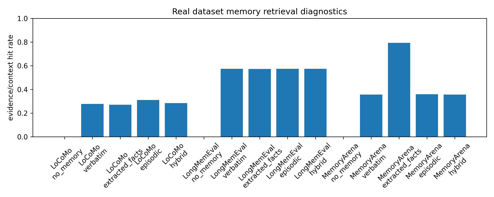
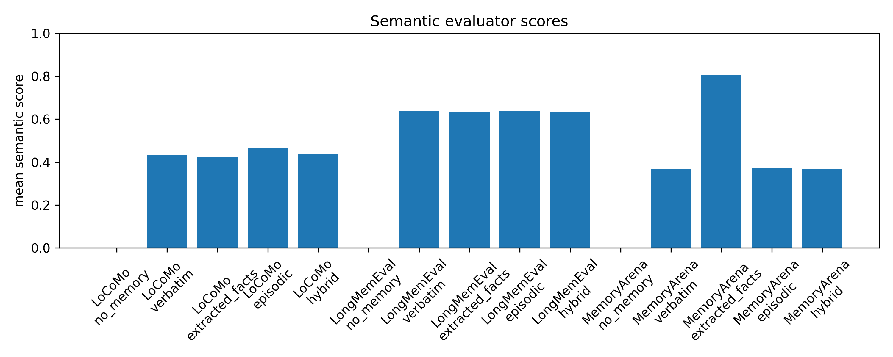
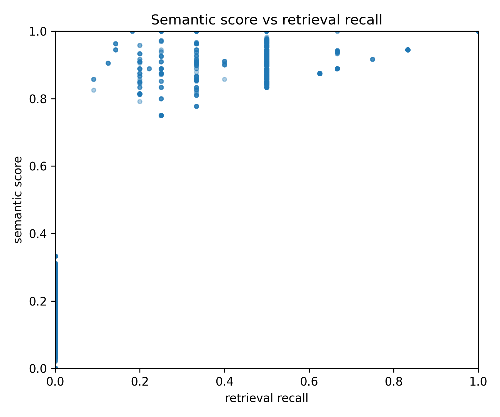
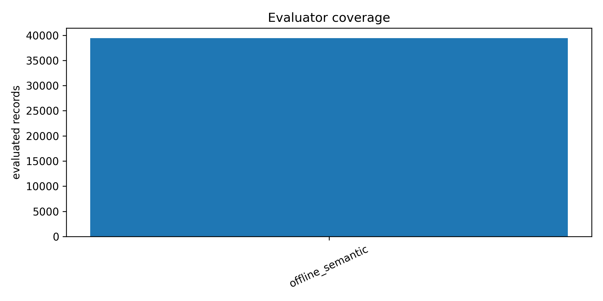
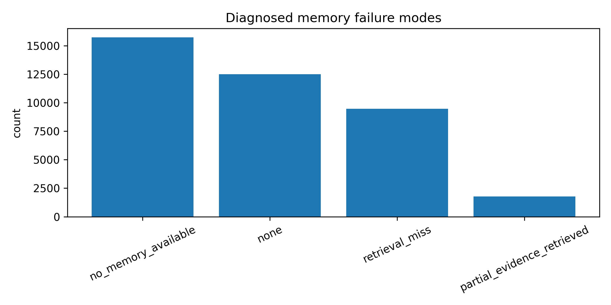
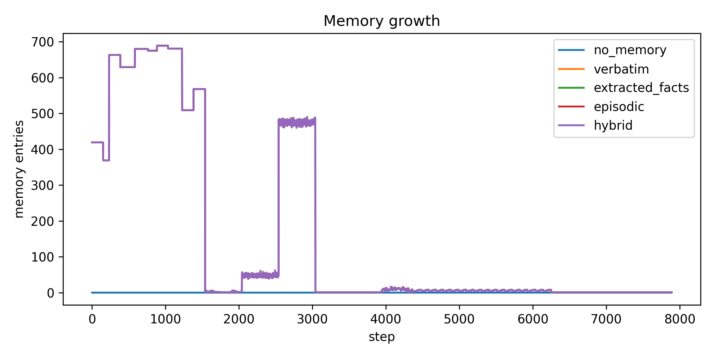
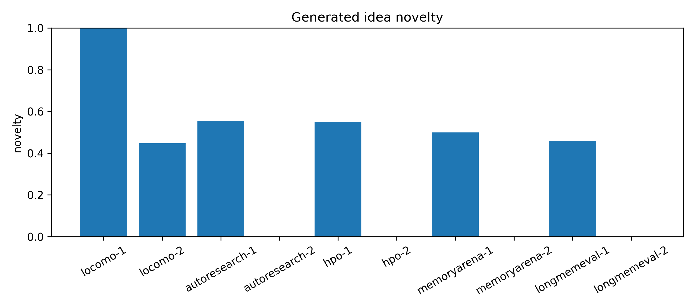
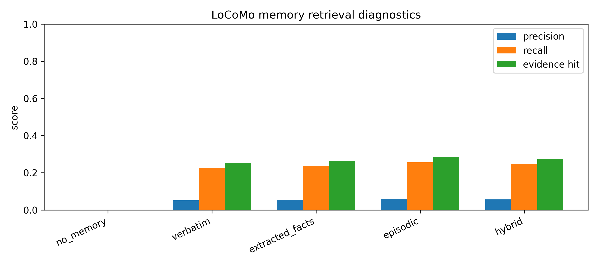

Source Code
Curated Python implementation for memory providers, diagnostic probes, semantic evaluators, Modal GPU execution, and figures.
Open source READMENotebook Tutorial
Ten numbered Jupyter/Colab notebooks following the KDD tutorial timeline from setup to external testing integrations.
Open notebook guideWalkthrough
Step-by-step teaching guide with local, Colab, and Modal GPU commands plus interpretation of final results.
Read walkthroughProvenance Logs
Selected clean logs for Modal GPU, autoresearch-agent reevaluation, notebook execution, and local smoke checks.
Open Modal logWhat participants learn
The tutorial teaches how to diagnose memory systems in autonomous research agents using reproducible, low-resource benchmarking. Participants compare memory strategies, inspect retrieval failures, test context utilization, and use results as memory for an autonomous research-agent loop.
INGESTINDEXSEARCHANSWEREVALUATEREPORT
Walkthrough for KDD 2026 tutorial delivery
Notebook timeline
Final paper-quality benchmark
The final Modal GPU run evaluates LoCoMo, LongMemEval, and MemoryArena with full offline semantic coverage. No-memory is a clean failure baseline; LongMemEval provides consistent retrieval-backed results; MemoryArena strongly favors extracted facts.
| Dataset | Strategy | Questions | Precision | Recall | Hit | Sem. Cov. | Sem. | Pass |
|---|---|---|---|---|---|---|---|---|
| LoCoMo | no_memory | 1540 | 0.000 | 0.000 | 0.000 | 1.000 | 0.000 | 0.000 |
| LoCoMo | verbatim | 1540 | 0.057 | 0.249 | 0.277 | 1.000 | 0.432 | 0.277 |
| LoCoMo | extracted_facts | 1540 | 0.055 | 0.242 | 0.271 | 1.000 | 0.422 | 0.271 |
| LoCoMo | episodic | 1540 | 0.064 | 0.278 | 0.311 | 1.000 | 0.465 | 0.311 |
| LoCoMo | hybrid | 1540 | 0.058 | 0.256 | 0.284 | 1.000 | 0.435 | 0.284 |
| LongMemEval | verbatim | 1500 | 0.393 | 0.516 | 0.575 | 1.000 | 0.636 | 0.575 |
| LongMemEval | extracted_facts | 1500 | 0.393 | 0.515 | 0.573 | 1.000 | 0.635 | 0.573 |
| LongMemEval | episodic | 1500 | 0.393 | 0.516 | 0.575 | 1.000 | 0.636 | 0.575 |
| MemoryArena | verbatim | 4850 | 0.180 | 0.348 | 0.356 | 1.000 | 0.367 | 0.356 |
| MemoryArena | extracted_facts | 4850 | 0.613 | 0.785 | 0.794 | 1.000 | 0.804 | 0.794 |
| MemoryArena | episodic | 4850 | 0.190 | 0.350 | 0.359 | 1.000 | 0.370 | 0.359 |
Figures and interpretation








Autonomous research-agent case study
The agent turns benchmark results into experiment memory, proposes new research ideas, retrieves prior outcomes, and decides whether to keep, revise, or discard each idea.
- Ideas: 12
- Kept: 3, revised: 3, discarded: 6
- Memory utilization rate: 0.5833
- Redundant idea rate: 0.5
- Mean semantic score: 0.3047
Reproduce
python -m compileall -q source
python source/run.py --mode synthetic --backend offline --episodes 5For full paper-quality runs, provide the real datasets separately and use Modal GPU:
python source/run.py \
--runner modal \
--modal-gpu A10G \
--modal-detach \
--mode real \
--backend offline \
--datasets locomo longmemeval memoryarena \
--max-conversations 999 \
--max-questions 999 \
--top-k 5 \
--eval-backend offline \
--visualizeSubmission package
Final metrics
Summaries
Executed notebooks
Data availability
The full real datasets are not vendored in this clean submission. See data/README.md for details. API keys must be provided through environment variables only.